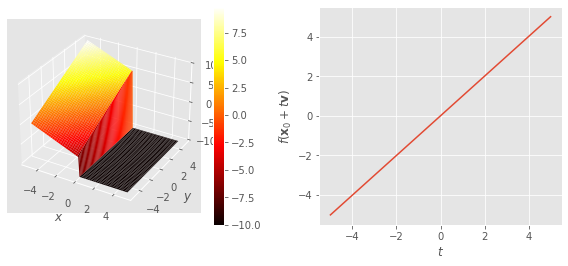
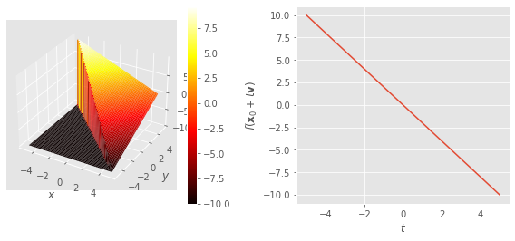

Derivadas direccionais e funcións derivables#
import time
print(' Última execución ', time.asctime() )
Última execución Sat Mar 15 23:55:28 2025
Obxectivos#
Lembrar que a derivada está relacionada coa pendente da función.
Presentar os conceptos de:
derivada direccional dunha función escalar.
funcións diferenciables.
Estudar a derivada direccional nun plano.
Enfatizaremos que nas funcións escalares e vectoriais para dar a derivada necesitamos un punto e unha dirección de desprazamento.
Lembraremos que son as funcións “suaves” e a relación coas series de Taylor.
Nota
Para que este notebook funcione en colab, precisamos graph_utils.py . Podes descargalo premendo na ligazón, e subilo a colab:

# general imports
%matplotlib inline
%load_ext autoreload
%autoreload 2
# numpy and matplotlib
import numpy as np
import matplotlib
import matplotlib.pyplot as plt
from mpl_toolkits.mplot3d import Axes3D
matplotlib.style.use('ggplot')
import graph_utils as gf
figsize = 6, 3.8
cmap = 'hot'
Derivada direccional#
Nas funcións dunha dimensión, \(f(x)\), a derivada estaba asociada coa “pendente” da función nun punto.
A definición da derivada dunha función real nun punto \(x\) é:
Observa a seguinte gráfica da función escalar \(f(x, y) = y - x\). É un plano que pasa pola orixe e ten pendente \(-1\) en \(x\) e pendente \(+1\) en \(y\).
Podes ver que se queremos dar a pendente nun determinado punto \((x_0, y_0)\) temos que indicar tamén en que dirección queremos calcular esa pendente \((v_x, v_y)\).
fun = lambda x, y : y - x
gf.graph(fun);

A seguinte figura mostra os conxuntos de niveis do plano, que son liñas rectas.
Considera, por exemplo, a orixe \((0, 0)\) e agora a partir dos conxuntos de nivel, intenta determinar cal é a pendente se nos movemos nestas direccións:
i) en \(x\), isto é en \({\bf v} = (1, 0)\)
ii) en \(y\), en \({\bf v} = (0, 1)\)
iii) na mediatriz do primeiro cuadrante \({\bf v} = (1, 1)\)
iv) na mediatriz do cuarto cuadrante \({\bf v} = (1, -1)\)
Experimenta : cambia a dirección do vector e estuda o cambio de pendente.
x0, y0 = 0., 0.
vx, vy = 0., 1.
fun = lambda x, y : y - x
gf.contour(fun, contours = 11);
gf.arrow(x0, y0, vx, vy);

Puideches verificar que a pendente cambia co vector \({\bf v}\).
Para dar a derivada, a pendente, das funcións escalares necesitamos dar, ademais do punto, \({\bf x}_0\), a dirección, \({\bf v}\) na que queremos calculalo.
Na seguinte cela debuxamos a gráfica do plano \(y-x\) e seccionámola verticalmente pasando polo punto \({\bf x}_0\), neste caso a orixe, \((0, 0)\), e nunha determinada dirección, \({ \bf v}\), neste caso \({\bf v} = (1, 0)\).
Explorar : cambia o vector \({\bf v}\) para ver como cambia a sección da gráfica.
x0, y0 = 0., 0.
vx, vy = 1., 1.
fun = lambda x, y: y - x
gf.graph(fun)
gf.graph_section(fun, x0, y0, vx, vy, sign = -1);

x0, y0 = 0., 0.
vx, vy = 0., 1.
fun = lambda x, y: y - x
gf.graph(fun)
gf.graph_section(fun, x0, y0, vx, vy, sign = -1);

x0, y0 = 0., 0.
vx, vy = 1., -1.
fun = lambda x, y: y - x
gf.graph(fun)
gf.graph_section(fun, x0, y0, vx, vy, sign = -1);

Explorar: observa como son as seccións e pendentes nun punto e nunha dirección coa función \(f(x, y) = y^2 - x^2\).
Explorar: cambia a función e estuda de novo as pendentes.
x0, y0 = 0., 0.
vx, vy = 1., 1.
fun = lambda x, y: y*y - x*x
gf.graph(fun)
gf.graph_section(fun, x0, y0, vx, vy, sign = -1);


Definimos a derivada direccional, \(f'({\bf x}; {\bf v})\) , dunha función escalar, \(f({\bf x})\), no punto, \({\bf x}_0\) e dirección, \({\bf v}\), como:
A derivada direccional dunha función \(f({\bf x})\) é a pendente da función en \({\bf x}_0\) e na dirección \({\bf v}\), que calculamos a partir da relación entre a diferenza do valor da función nun punto \({\bf x}_0 + h {\bf v}\) e no punto de referencia \({\bf x}_0\), e a distancia \(h\) que facemos tender a cero, de xeito que os dous puntos están infinitamente próximos.
Observa que na derivada direccional aparece explícitamente a dirección \({\bf v}\).
Na figura anterior, a derivada \(f'({\bf x}_0; \; {\bf v})\) corresponde á pendente en \({\bf x}_0\); e na gráfica de \(f({\bf x}_0 + t {\bf v})\) vs \(t\), a pendente en \(t=0\), en negriña.
Exemplo : Imos calcular a derivada direccional do plano \(f(x, y) = y - x\) na orixe e nas direccións \((1, 0), \; (0, 1), \; (1, 1), \; (1, -1) \).
Calculamos:
onde \( f(x, y) = y - x\):
i) para o vector \((1, 0)\):
ii) para o vector \((0, 1)\):
iii) para o vector \((1, 1)\):
iv) para o vector \((1, -1)\):
v) e para un vector xenérico \((v_x, v_y)\):
En concreto, para \((v_x, 0)\) y \((0, v_y)\):
Ten en conta que neste caso, a derivada direccional é un mapa lineal.
É dicir, a suma da derivada direccional de \(v_x\) en \(x\) e a derivada direccional de \(v_y\) en \(y\), é a derivada direccional na dirección \((v_x, v_y)\).
Exercicio : Calcula a derivada direccional da función \(f(x, y) = 9 - x^2 - y^2\) en \((1, 1)\) e as direccións \((1, 0)\) e \((0, 1) \).
x0, y0 = 1., 1.
vx, vy = 1., 0.
fun = lambda x, y: 9 - 2.*y*y - 2.*x*x
gf.graph(fun)
gf.graph_section(fun, x0, y0, vx, vy, sign = -1);

A función é: \(f(x, y) = 9 -x^2 - y^2\)
Calculamos:
E
E agora a derivada direccional a dirección \((1, 0)\) no punto \((1, 1)\):
Para
E a dirección da derivada na dirección \((1, 0)\) no punto \((1, 1)\):
As dúas coinciden.
Derivadas parciais#
Chamaremos derivadas parciais dunha función escalar nun punto ás derivadas direccionais nos eixes de coordenadas.
No caso anterior, a derivada parcial con respecto a \(x\) é:
e con respecto a \(y\):
Ten en conta que usamos diferentes notacións co mesmo significado.
Para calcular as derivadas parciais podemos utilizar os métodos para diferenciar funcións reais dunha dimensión.
Se calculamos a derivada parcial con respecto a \(x\), consideramos \(y\) como unha constante na expresión da función, e diferenciaremos normalmente con respecto a \(x\).
Considere a función:
As derivadas parciais serán:
Se os calculamos no punto \((1, 1)\), obtemos:
O mesmo que obtivemos antes da definición de derivada direccional.
Derivadas segundas#
Cada derivada parcial é unha función escalar á que podemos calcular á súa vez as súas derivadas parciais, que chamaremos segundas derivadas .
e as segundas derivadas cruzadas:
En xeral, as derivadas parciais cruzadas serán iguais, pero non necesariamente.
No exemplo anterior, a función escalar é: \(f(x, y) = 9 -x^2 -y^2\).
Xa tiñamos calculado as súas derivadas parciais:
E as súas segundas derivadas son:
Exercicio : Calcula as segundas derivadas parciais da seguinte función:
Solución:
As derivadas parciais son:
E as segundas derivadas:
E as segundas derivadas cruzadas:
Malditas funcións estrañas!#
Agora estuda a seguinte función:
Exercicio : comproba que na orixe ten derivadas parciais, pero non ten derivadas noutra dirección!
xs = np.linspace(-3., 3., 101)
ys = np.linspace(-3., 3., 101)
xms, yms = np.meshgrid(xs, ys)
a = 1.
zms = 0.*xms + 0.*yms +a
sel = (xms == 0); zms[sel] = xms[sel] + yms[sel]
sel = (yms == 0); zms[sel] = xms[sel] + yms[sel]
fig = plt.figure(figsize=(8, 6)); ax = plt.axes(projection='3d')
ax.plot_wireframe(xms, yms, zms, alpha = 0.5);
ax.set_xlabel('x'); ax.set_ylabel('y'); #ax.set_aspect('equal');
Pregunta : Agora estuda esta función, que é aínda peor:
comproba que na orixe, esta función é continua, ten derivadas parciais e todas as derivadas direccionais, pero a súa gráfica é diabólica, non é nada “suave”.
Funcións diferenciables#
En funcións reais en 1D, dicíamos que unha función era diferenciable se era “suave” : se era continua, non tiña curvas nin roturas.
Noutras palabras, era diferenciable se admitía a expansión de Taylor .
En primeira orde, a expansión de Taylor dunha función 1D real permitíanos aproximar, nun valor \(x\) “próximo” a \(x_0\) a función mediante unha recta tanxente con pendente \(f'(x_0)\), a derivada en \(x_0\).
Lembra que a ecuación dunha recta que pasa polo punto \((x_0, y_0)\) con pendente \(a\) vén dada por:
A derivada é a pendente da función nun punto.
Na seguinte figura debuxamos a función \(f(x) = x^2\) e a expansión de Taylor no punto \(x_0\). Podes ver que nunha pequena rexión a liña e a función se solapan.
Explora cambiando o valor de \(x_0\).
Está claro que \(f(x)\) é “suave”.
Pregunta : Inventa unha función 1D que non sexa “suave”, non diferenciable.
x0 = 1.5
fun = lambda x : x*x
fp = lambda x : 2.*x
taylor = lambda x : fun(x0) + fp(x0) * (x -x0)
fig,ax = gf.fun1d(fun);
gf.fun1d(taylor, newfig = False);
plt.ylim(-1., 10.);
Consideremos agora unha función escalar bidimensional. Diremos que é “suave” se a súa gráfica é continua (non está rota), non ten pregamentos nin picos.
Mira a gráfica desta función, cres que é “suave”? Está rasgado, ten pregamentos, picos?
fun = lambda x, y : 9 - x*x - y*y
gf.graph(fun);

Sen dúbida é “suave”
As funcións escalares bidimensionais serán diferenciables se podemos facer a súa expansión de Taylor de primeira orde.
O que neste caso significa que nunha rexión “pequena”, nun punto \((x, y)\) “próximo” ao punto \((x_0, y_0)\), a gráfica da función pódese aproximar mediante un plano tanxente , para o cal pendente na dirección \(x\) corresponderá á súa derivada parcial en \(x\) nese punto, \(f'_x(x_0, y_0)\) e a pendente na dirección \(y\), á derivada parcial en \(y\) , \(f'_y (x_0, y_0)\).
A expansión de Taylor de primeira orde será:
Lembra que a ecuación dun plano que pasa por \((x_0, y_0, z_0)\), con pendentes \(a\) na dirección \(x\) e \(b\) na dirección \(y\), vén dada por:
onde identificamos rapidamente:
que son, por suposto, as derivadas parciais.
Observa a gráfica da función:
sobre o que debuxamos, nun punto \((x_0, y_0)\), o plano que corresponde ao seu desenvolvemento de Taylor de primeira orde.
Explorar : cambia o punto e mira como a expansión de Taylor, o plano tanxente, cobre a gráfica nunha rexión arredor de \((x_0, y_0)\). Algo semellante ao que pasou coa recta nunha función unidimensional.
Neste caso:
entón o desenvolvemento de Taylor arredor do punto \((x_0, y_0)\) é:
%matplotlib inline
x0, y0 = 1, 0.
fun = lambda x, y: 9 - x*x - y*y
fpx = lambda x, y: -2.*x + 0 * y
fpy = lambda x, y: -2.*y + 0 * x
taylor = lambda x, y: fun(x0, y0) + fpx(x0, y0) * (x - x0) + fpy(x0, y0) * (y -y0)
fig,ax = gf.graph(fun);
gf.graph(taylor, newfig = [fig,ax]);
Exercicio Calcula a expansión de Taylor na orixe do plano \(y -x\) e verifica que é o mesmo.
Tomemos o plano anterior: \(f(x, y) = y -x \).
Na orixe, \(f(0, 0) = 0\), e as derivadas direccionais son:
Entón a expansión de Taylor en \((0,0)\) é: \(f(x, y) = y - x \)
Pregunta : E en calquera outro punto?
As derivadas direccionais dunha función diferenciable teñen unha expresión sinxela.
Consideremos de novo unha función \(f(x, y)\) diferenciable en \((x_0, y_0)\).
Agora reescribimos o punto próximo \((x, y)\) por \((x_0, y_0) + (v_x, v_y)\), onde \((v_x, v_y)\) é un vector “pequeno”.
Podemos aproximar a función:
Calculemos agora a derivada direccional en \((x_0, y_0)\) na dirección \((v_x, v_y)\):
Polo tanto:
Se a función é diferenciable, a derivada direccional en \((x_0, y_0)\) e con dirección \((v_x, v_y)\) pódese obter das súas derivadas parciais e tamén é lineal en \((v_x, v_y)\).
Exercicio : calcula a derivada direccional da función diferenciable \(f(x, y) = 9 -x^2 - y^2\) no punto \((1, 1)\) e a dirección \((1, 1)\) dende de as súas derivadas parciais.
As derivadas parciais son:
No punto \((1, 1)\) son:
E a derivada direccional do vector \((1, 1)\):
Para funcións escalares xenéricas en \(\mathbb{R}^n\).
Sexa \(f({\bf x})\) unha función escalar de \(\mathbb{R}^n\), a función será diferenciable en \({\bf x}_0\) se nun punto “próximo”, \({ \bf x}\), dado por un vector “pequeno”, \({\bf v}\), por \({\bf x} = {\bf x}_0 + {\bf v}\) podemos aproximar:
onde, as derivadas parciais son:
E a derivada direccional nun punto \({\bf x}_0\) dirección \({\bf v}\) vén dada por:
Exercicio : Calcula as derivadas parciais da seguinte función escalar:
Solución:
Isto é todo por agora!
Apéndices#
Algo máis complicado!
Exercicio : calcula a derivada direccional da función \(f({\bf x}) = \| {\bf x} \|^2\) na dirección \({\bf v}\).
Solución:
Ten en conta que \(f({\bf x}) = \| {\bf x} \|^2 = {\bf x} {\bf x}\), polo que: